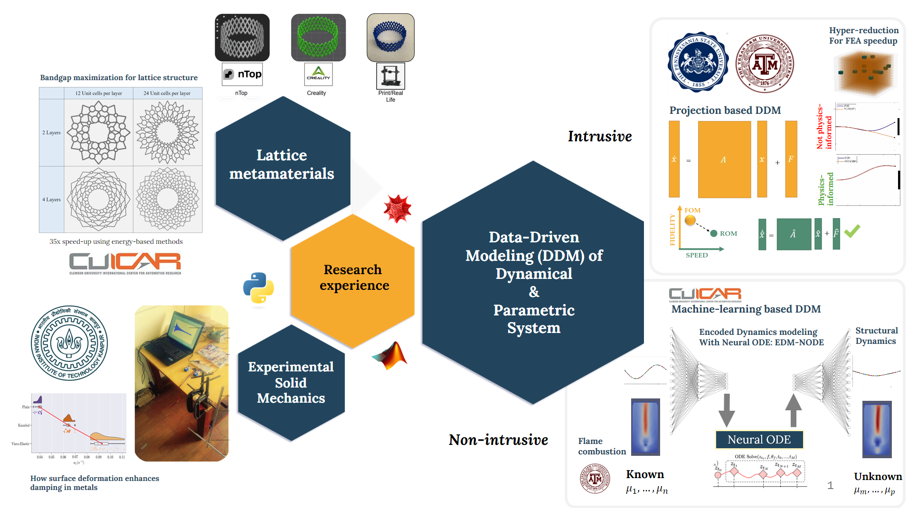
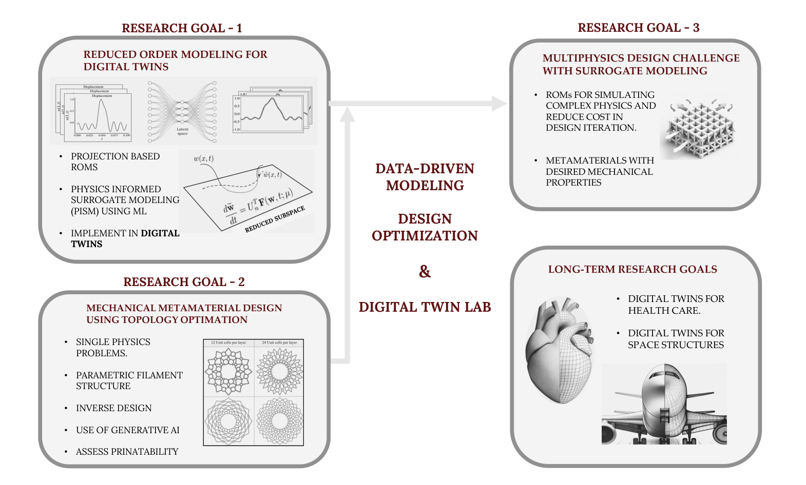

Research
At the 3Ds Lab, our work is situated at the intersection of Data-driven modeling, Design optimization, and Digital twin technologies.
We address the challenges associated with modeling, simulating, and designing complex engineering systems through the following research directions:
Development of physics-informed reduced-order models and surrogate frameworks to enable real-time digital twin deployment in structural and thermal systems.
Topology optimization and generative AI-driven inverse design of multifunctional, lattice-based metamaterials with tailored mechanical properties.
Integration of machine learning-based surrogate models into multi-physics design workflows to reduce computational cost and accelerate design iterations.

Multidisciplinary Research in Data-Driven Modeling, Computational Mechanics, and Topology Optimization: A Roadmap

My research primarily focuses on computational solid mechanics and data-driven modeling of structural vibration, with recent emphasis on hyper-reduced order models for thermal and reservoir systems aimed at digital twin development. I am aiming for a research career that reflects this multidisciplinary blend. My previous work includes data-driven modeling of vibro-impact systems and dynamic topology optimization for two-dimensional lattice structures. Throughout my Ph.D., I investigated reduced-order modeling strategies for structural systems exposed to discontinuous and non-smooth loading conditions, while my master’s research involved experimental characterization of structural damping in metallic specimens. My broader research interests span reduced-order modeling, finite element analysis, computational mechanics, and nonlinear dynamics, supported by substantial programming expertise in MATLAB, Mathematica, and Python. This interdisciplinary experience provides me with a comprehensive understanding and unique perspective on addressing theoretical and computational challenges in computational mechanics and model reduction. The research to be conducted at the 3DS1 lab consists of three main avenues discussed below.
Research Thrust Areas
Our research at 3Ds Lab spans three core thrusts that integrate computational mechanics, machine learning, and digital twin frameworks.
T. A - 1 : Model Discovery and Reduction Strategies and Integration With Digital Twin Technologies
Motivation
Reduced Order Models (ROMs) [1] improve computational efficiency in high-dimensional mechanical systems like structural, fluid, and thermal systems. These systems are governed by partial differential equations (PDEs) or large-scale ordinary differential equations (ODEs). Despite their complexity, their behavior often resides in low-dimensional sub spaces identified through data-driven approaches like proper orthogonal decomposition (POD) [2]. High-dimensional models (HDMs) are projected onto these subspaces to form ROMs, capturing dominant behaviors and enabling significant computational speedups.
Data-driven surrogates are also popular when high-fidelity models are unavailable. These surrogates rely on observed quantities of interest (QOI) from experiments or HDMs. Techniques such as Gaussian-process regression, dynamic mode decomposition, and neural networks formulate these surrogates. Unlike ROMs, surrogates do not inherit the dynamic operator from HDMs but act as fast emulators, generating similar QOI data based on input.
With the advent of digital twins (DT) for real-time monitoring and analysis, there is a crucial demand for rapid, precise simulations. Simulating DTs of mechanical systems is computationally costly due to the complexities involved. Surrogates and ROMs reduce these costs while maintaining the accuracy needed for effective digital twins with enhanced predictive capabilities.
Relevant Experience: Physics-informed intrusive and non-intrusive data-driven modeling [1, 3, 4, 5]; Computational sciences (minor degree).
Challenges
Nonlinear HDMs challenge ROMs because they require iterative access to the full system, leading to only moderate speedups. Hyper-reduction methods like Empirical Cubature Method, Discrete Empirical Interpolation Method, and Energy Conserving Sampling and Weighting [6] help speed up the computation of nonlinear terms but can destabilize models. Developing new hyper-reduction algorithms is essential.
Data-driven methods often overlook the physics of HDMs, resulting in inaccurate and unstable ROMs. Morevoer, generating extensive data for precise models is impractical. Incorporating physics is crucial for reliable models. [7, 1]
Objectives
Address the challenges of evaluating nonlinearities in ROMs for high-dimensional systems, considering the limitations of current hyper-reduction algorithms.
Enhance the accuracy and stability of data-driven ROMs by integrating physical principles..
Develop ROMs suitable for digital twin technology, focusing on structural and thermal systems.
Methodology
Our approach integrates two complementary strategies:
1. Projection-Based ROM Development
Traditional projection-based model order reduction will focus on developing advanced closure models and applying hyper-reduction algorithms.
2. Scientific Machine Learning (SciML)
scientific machine learning strategies will emphasize structure-preserving neural networks. This approach combines the predictive abilities of machine learning with physical principles to preserve the critical physical and mathematical structures of the system.
T. A - 2 : Printable Mechanical Metamaterials for Structural Lightweighting
Motivation
Mechanical metamaterials, with unique microstructures and programmable properties, open avenues for innovative applications. These ultra-light yet strong structures are ideal for sectors where weight is critical, such as space and biomedical engineering. In space engineering, reduced weight improves mobility and lowers launch costs while maintaining structural integrity. In biomedical fields, their lightweight nature is crucial for developing implants like cardiovascular stents, spinal fusion constructs, and prosthetics offering both strength and comfort.
Lattice metamaterials, with porous structures consisting of tunable unit cells [2], achieve lightweight properties with specific engineering. Focus will be on printable filament structures defined using parametric equations, enabling flexible tuning of cell geometry for tailored thermal, mechanical, or negative-index properties.
Relevant Experience: Geometric optimization of mechanical meta-materials for bandgap optimization [2, 8]; Design and solid mechanics (M.Tech specialization).
Challenges
Generating unique multi-scale unit-cell filament structures and estimating their properties using computational models is challenging. Efficient inverse design approaches, like topology optimization, are needed to determine filament geometry based on predefined properties.
Additionally, complex designs from these approaches may be hard to fabricate, even with advanced 3D printing techniques. Examples include biomaterial-like hierarchical lattices, enclosed cells, and movable components. Novel fabrication approaches are also required.
Objectives
Generate new parametric equations and study the properties of the corresponding structures.
Develop efficient inverse-design schemes to create multifunctional multi-scale metamaterials with desired linear or nonlinear behavior.
Use of AI to generate new filament geometries.
Assess printability and evaluate mechanical and material properties experimentally.
Methodology
Develop a comprehensive library of parametric equations to define diverse lattice structures, enhancing design-space exploration. Establish a theoretical framework to generate new filament geometry using generative AI. Moreover, evaluate the printability of these designs using 3D printing, focusing on manufacturing feasibility, structural stability, material compatibility, and printing resolution limits.
This research aims to broaden the spectrum of manufacturable metamaterials, leveraging generative AI for design, detailed parametric equations, and thorough printability assessment, to meet a wide range of engineering needs and foster innovation in aerospace, biomedical engineering.
T. A - 3 :Design Challenges for Multi-physics Problems
Motivation
Topology optimization often focuses on single-physics linear problems, such as structural stiffness optimization under weight constraints. Advances in computational methods have expanded its use to complex multi-functional systems with multi-physics and constraints. Examples include fluid-structure interaction in aerospace, battery electrolyte design with high stiffness and ionic conductivity, and battery packs with better heat-exchange and superior load-bearing capabilities. These models involve numerous coupled nonlinear differential equations. Despite software and hardware progress, optimizing large-scale multi-physics design problems remains challenging and computationally expensive.
Challenges
The major challenge in addressing multi-physics optimization problems lies in the substantial computational demands incurred by the simultaneous solution of large-scale models representing multiple physical processes, containing numerous constraints and thousands of variables, during each optimization iteration.
Objectives
The proposed research aims to combine topology optimization and surrogate modeling to tackle multi-physics problems.
Development of advanced optimization algorithms targeted towards efficiently solving multi-physics problems.
Methodology
Here also we will specifically focus on structures based on parametrically-defined lattice metamaterials. The major aim, however, will be to develop Machine learning-based surrogates to simulate one or more associated physical processes and thereby improve the computational efficiency of the overall optimization process. The surrogate models will be trained based on data generated during forward analysis with different parameters defining metamaterial geometry.